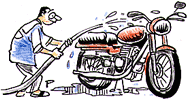
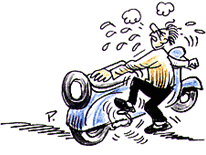
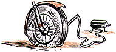

Manual Guides
a few tips that will help keep your vehicle clean:
* before you clean the vehicle, ensure that the ignition switch unit, h.t. coil and silencer are covered using plastic sheets.
* clean the vehicle using low-pressure water.
* all painted surfaces should be washed only with water, as kerosene or detergent will damage the paint
* take care not to apply water on the electrical parts
* for cleaning the engine externally, brush it with kerosene and wipe it dry with a clean rag.
* dry the vehicle and lubricate it after you wash it
at times, water may enter on the brake liners during washing, leading to brake slippage.
therefore, make it a point to dry the liners by braking frequently
till the brake starts working effectively.
after you have cleaned the vehicle:
* replace or top up engine/ gear box oil
* clean the air filter
* clean the spark plug, and seal the electrode gap
* overhaul the carburetor
* adjust the control cable
* tighten nuts, bolts and fasteners
* clean and adjust front and rear brakes
* check and adjust steering column play
* check for proper functioning of lights, switches and horn
* check battery electrolyte level and top up with distilled water
* check and adjust drive chain tension
* check and adjust spoke tightness / rim runout
* check and clean inline fuel filter
First aide tips:
in case of starting trouble
* check fuel in fuel tank / fuel cock position / fuel tank cap vent hole
* check fuel pipe for pinched / twisted
* check and clean air filter element
* check and clean spark plug and adjust electrode gap
* check ignition switch / engine kill switch position
* check fuel in fuel tank / fuel cock position / fuel tank cap vent hole
* check fuel pipe for pinched / twisted
* check and clean air filter element
* check and clean spark plug and adjust electrode gap
Tyres,wheels and windshields:

wheels are very important for smooth driving and perfect looks and are easily damaged by the use of harsh chemicals, brake dust and road salts. to avoid such ugly looks wash and wax your wheels weekly and use a corrosion protectant. during washing, however, take care to avoid excessive wetting of brake shoes and discs as this may affect the braking while driving. do not wash brake discs with cleaners whose compounds include chlorine or silicon. chlorine causes rust and silicon makes brake discs slick, diminishing their usefulness and safety.